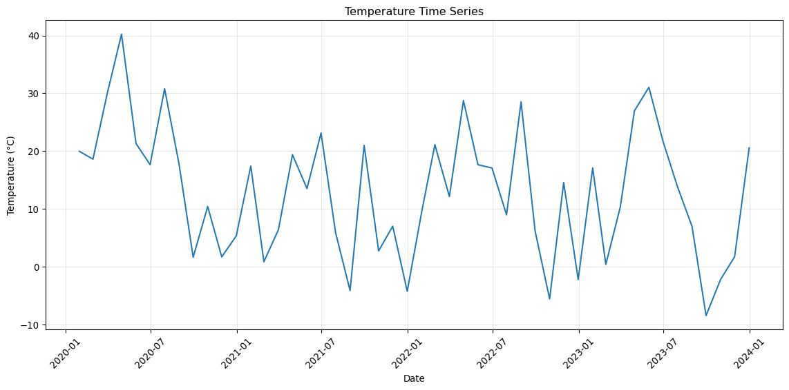
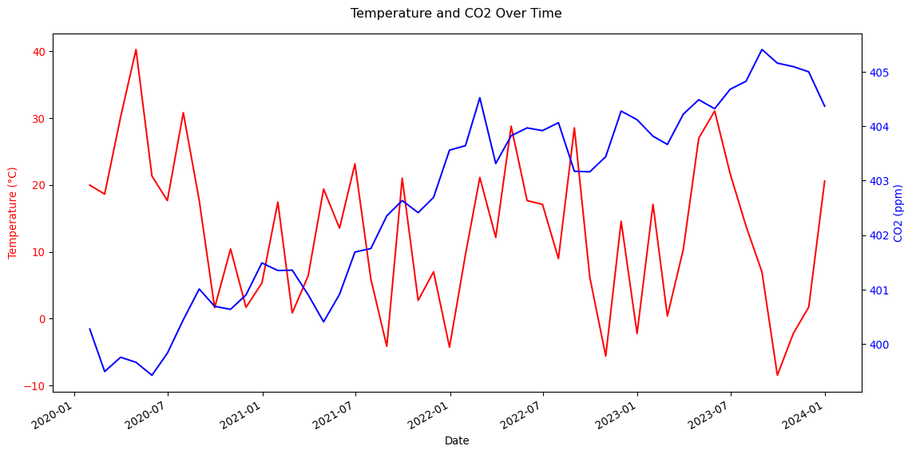

This cheatsheet provides a quick reference for working with dates, times, and time series data in pandas. Time series analysis is crucial in environmental data science for analyzing trends, seasonal patterns, and temporal relationships in climate, environmental monitoring, and other time-dependent datasets.
Setup
Always start by importing the necessary libraries:
Code
import pandas as pdimport numpy as npimport matplotlib.pyplot as plt# Set random seed for reproducible examplesnp.random.seed(42)# Create some sample time series datadates = pd.date_range('2020-01-01', '2023-12-31', freq='ME') # Monthly end datestemperature = np.random.normal(15, 10, len(dates)) +10* np.sin(np.arange(len(dates)) *2* np.pi /12)sample_df = pd.DataFrame({'date': dates,'temperature': temperature,'co2': 400+ np.cumsum(np.random.normal(0.1, 0.5, len(dates)))})
Loading Time Series Data
Reading CSV with Date Parsing
Code
# Parse dates while reading CSV (most efficient)# df = pd.read_csv('data.csv', parse_dates=['Date'])# For demonstration, let's save and reload our sample datasample_df.to_csv('temp_data.csv', index=False)df = pd.read_csv('temp_data.csv', parse_dates=['date'])print("First few rows:")print(df.head())print(f"\nDate column dtype: {df['date'].dtype}")print(f"Data shape: {df.shape}")
First few rows:
date temperature co2
0 2020-01-31 19.967142 400.271809
1 2020-02-29 18.617357 399.490289
2 2020-03-31 30.137139 399.752331
3 2020-04-30 40.230299 399.659790
4 2020-05-31 21.318720 399.421329
Date column dtype: datetime64[ns]
Data shape: (48, 3)
Converting Strings to Datetime
Code
# Convert year-only data to datetime (common in environmental datasets)year_data = pd.DataFrame({'year': [2020, 2021, 2022, 2023],'annual_temp': [14.5, 15.2, 14.8, 15.6]})# Convert year to datetimeyear_data['date'] = pd.to_datetime(year_data['year'], format='%Y')print(year_data)
year annual_temp date
0 2020 14.5 2020-01-01
1 2021 15.2 2021-01-01
2 2022 14.8 2022-01-01
3 2023 15.6 2023-01-01
Handling Different Date Formats
Code
# Common date format conversionsdate_examples = pd.DataFrame({'date_str': ['2023-01-15', '15/01/2023', '01-15-23', '2023-Jan-15']})# Different parsing approaches# Example 1: ISO format (automatic parsing)iso_date = pd.to_datetime('2023-01-15')# Example 2: European format (day/month/year)euro_date = pd.to_datetime('15/01/2023', format='%d/%m/%Y')# Example 3: US short format us_date = pd.to_datetime('01-15-23', format='%m-%d-%y')# Example 4: Text month formattext_date = pd.to_datetime('2023-Jan-15', format='%Y-%b-%d')print(f"ISO format: {iso_date}")print(f"European format: {euro_date}")print(f"US format: {us_date}")print(f"Text month: {text_date}")
ISO format: 2023-01-15 00:00:00
European format: 2023-01-15 00:00:00
US format: 2023-01-15 00:00:00
Text month: 2023-01-15 00:00:00
Working with DateTime Index
Setting DateTime Index
Code
# Set date column as index for time series operations (method chaining)df_indexed = (df .set_index('date') .copy()) # Explicit copy to avoid SettingWithCopyWarningprint(df_indexed.head())print(f"Index is datetime: {pd.api.types.is_datetime64_any_dtype(df_indexed.index)}")print(f"Index name: {df_indexed.index.name}")
temperature co2
date
2020-01-31 19.967142 400.271809
2020-02-29 18.617357 399.490289
2020-03-31 30.137139 399.752331
2020-04-30 40.230299 399.659790
2020-05-31 21.318720 399.421329
Index is datetime: True
Index name: date
Creating Date Ranges
Code
# Create various date rangesdaily_range = pd.date_range('2023-01-01', '2023-01-10', freq='D')monthly_range = pd.date_range('2023-01-01', periods=12, freq='ME')yearly_range = pd.date_range('2020-01-01', '2025-01-01', freq='YE')print(f"Daily: {daily_range[:5]}")print(f"Monthly: {monthly_range[:3]}")print(f"Yearly: {yearly_range}")
# Define seasonal groupings as constants (more maintainable)SEASON_MAP = {12: 'Winter', 1: 'Winter', 2: 'Winter',3: 'Spring', 4: 'Spring', 5: 'Spring', 6: 'Summer', 7: 'Summer', 8: 'Summer',9: 'Fall', 10: 'Fall', 11: 'Fall'}def get_season(date):"""Assign season based on month (Northern Hemisphere)."""return SEASON_MAP[date.month]# Apply season function to create new columndf['season'] = df['date'].apply(get_season)# For indexed DataFrame, apply to index valuesdf_indexed['season'] = df_indexed.index.to_series().apply(get_season)print(df[['date', 'season']].head(8))
date season
0 2020-01-31 Winter
1 2020-02-29 Winter
2 2020-03-31 Spring
3 2020-04-30 Spring
4 2020-05-31 Spring
5 2020-06-30 Summer
6 2020-07-31 Summer
7 2020-08-31 Summer
Creating N-Year Groupings
Code
# Group years into 5-year periods (useful for climate normals)N =5df['five_year_period'] = (df['date'].dt.year // N) * N# More flexible binning with pd.cutdf['custom_period'] = pd.cut(df['date'].dt.year, bins=[2019, 2021, 2022, 2024], labels=['2020-2021', '2022', '2023-2024'], include_lowest=True)print(df[['date', 'five_year_period', 'custom_period']].head(10))
# Resample monthly data to annual averages - only numeric columnsannual_avg = df_indexed.resample('YE').mean(numeric_only=True)print("Annual averages:")print(annual_avg.head())# Resample to quarterly data - only numeric columnsquarterly_data = df_indexed.resample('QE').mean(numeric_only=True)print("Quarterly averages:")print(quarterly_data.head())
Annual averages:
temperature co2
date
2020-12-31 17.959553 400.298642
2021-12-31 9.087681 401.834578
2022-12-31 13.066647 403.788055
2023-12-31 11.674224 404.590108
Quarterly averages:
temperature co2
date
2020-03-31 22.907213 399.838143
2020-06-30 26.402550 399.636095
2020-09-30 16.703826 400.713224
2020-12-31 5.824624 401.007104
2021-03-31 8.232632 401.201634
Handling Mixed Data Types in Resampling
When your DataFrame contains both numeric and non-numeric columns (like strings), use numeric_only=True with aggregation functions like .mean(), .sum(), etc. This prevents errors when pandas tries to calculate statistics on text columns.
Alternatively, you can select only the columns you want before resampling:
# Select only numeric columns before resamplingnumeric_cols = ['temperature', 'co2']annual_avg = df_indexed[numeric_cols].resample('YE').mean()
temperature co2
mean min max std mean
date
2020-12-31 17.959553 1.645002 40.230299 11.951324 400.298642
2021-12-31 9.087681 -4.247482 23.142473 9.610991 401.834578
2022-12-31 13.066647 -5.577109 28.756980 10.647341 403.788055
2023-12-31 11.674224 -8.445474 31.044920 12.320898 404.590108
Common Resampling Frequencies
Code
# Demonstrate common frequency codesfreq_examples = {'D': 'Daily','W': 'Weekly', 'ME': 'Month End','MS': 'Month Start','QE': 'Quarter End','YE': 'Year End','A': 'Annual'}print("Common frequency codes:")for code, description in freq_examples.items():print(f" {code}: {description}")
Common frequency codes:
D: Daily
W: Weekly
ME: Month End
MS: Month Start
QE: Quarter End
YE: Year End
A: Annual
Year-over-year changes:
temperature temp_yoy_change co2 co2_yoy_change
date
2020-12-31 17.959553 NaN 400.298642 NaN
2021-12-31 9.087681 -8.871872 401.834578 1.535936
2022-12-31 13.066647 3.978966 403.788055 1.953477
2023-12-31 11.674224 -1.392423 404.590108 0.802053
Rolling Averages
Code
# Calculate 12-month rolling averagedf_indexed['temp_12m_rolling'] = df_indexed['temperature'].rolling(window=12).mean()print("Original vs 12-month rolling average:")print(df_indexed[['temperature', 'temp_12m_rolling']].head(15))
Original vs 12-month rolling average:
temperature temp_12m_rolling
date
2020-01-31 19.967142 NaN
2020-02-29 18.617357 NaN
2020-03-31 30.137139 NaN
2020-04-30 40.230299 NaN
2020-05-31 21.318720 NaN
2020-06-30 17.658630 NaN
2020-07-31 30.792128 NaN
2020-08-31 17.674347 NaN
2020-09-30 1.645002 NaN
2020-10-31 10.425600 NaN
2020-11-30 1.705569 NaN
2020-12-31 5.342702 17.959553
2021-01-31 17.419623 17.747260
2021-02-28 0.867198 16.268080
2021-03-31 6.411076 14.290908
Seasonal Analysis
Code
# Group by season and calculate statisticsseasonal_stats = df.groupby('season').agg({'temperature': ['mean', 'std'],'co2': 'mean'}).round(2)print("Seasonal statistics:")print(seasonal_stats)
Seasonal statistics:
temperature co2
mean std mean
season
Fall 4.23 8.30 403.01
Spring 21.50 10.09 402.10
Summer 15.68 10.03 402.76
Winter 10.37 9.82 402.64
Time Series Filtering and Selection
Selecting Date Ranges
Code
# First, ensure we have a proper DatetimeIndexprint(f"DataFrame index type: {type(df_indexed.index)}")print(f"Date range: {df_indexed.index.min()} to {df_indexed.index.max()}")# Select data from specific year using boolean indexingdata_2022 = df_indexed[df_indexed.index.year ==2022]print(f"Data from 2022: {len(data_2022)} records")# Select data from specific date range using locrecent_data = df_indexed.loc['2023-01-01':'2023-06-30']print(f"First half 2023: {len(recent_data)} records")# Filter using datetime conditions on original DataFramemodern_data = df[df['date'] >= pd.to_datetime('2022-01-01')]print(f"Modern data (2022+): {len(modern_data)} records")
DataFrame index type: <class 'pandas.core.indexes.datetimes.DatetimeIndex'>
Date range: 2020-01-31 00:00:00 to 2023-12-31 00:00:00
Data from 2022: 12 records
First half 2023: 6 records
Modern data (2022+): 24 records
Filtering by Date Components
Code
# Filter by month (e.g., all January data)january_data = df[df['date'].dt.month ==1]# Filter by seasonwinter_data = df[df['season'] =='Winter']# Filter by decaderecent_decade = df[df['decade'] ==2020]print(f"January records: {len(january_data)}")print(f"Winter records: {len(winter_data)}")print(f"2020s decade: {len(recent_decade)}")
January records: 4
Winter records: 12
2020s decade: 48
Merging Time Series Data
Joining on DateTime Index
Code
# Create second dataset with different frequencydaily_dates = pd.date_range('2022-01-01', '2022-12-31', freq='D')np.random.seed(123) # Different seed for variety in examplesdaily_data = pd.DataFrame({'precipitation': np.random.exponential(2, len(daily_dates))}, index=daily_dates)# Resample to monthly to match our original data frequencymonthly_precip = daily_data.resample('ME').sum()# Merge with existing datamerged_data = pd.merge(df_indexed, monthly_precip, left_index=True, right_index=True, how='inner')print("Merged time series data:")print(merged_data.head())
Merged time series data:
temperature co2 season temp_12m_rolling precipitation
2022-01-31 9.556173 403.644014 Winter 8.432394 51.491886
2022-02-28 21.109226 404.526336 Winter 10.119230 56.312308
2022-03-31 12.150318 403.316464 Spring 10.597500 51.965009
2022-04-30 28.756980 403.827415 Spring 11.379154 61.195394
2022-05-31 17.653867 403.970938 Spring 11.722648 69.480568
Time Series Visualization
Basic Time Series Plots
Code
# Simple time series plot using object-oriented interfacefig, ax = plt.subplots(figsize=(12, 6))ax.plot(df_indexed.index, df_indexed['temperature'])ax.set_title('Temperature Time Series')ax.set_xlabel('Date')ax.set_ylabel('Temperature (°C)')ax.tick_params(axis='x', rotation=45)ax.grid(True, alpha=0.3)fig.tight_layout()plt.show()

Multiple Series Plot
Code
# Plot multiple time series with dual y-axisfig, ax1 = plt.subplots(figsize=(12, 6))# Temperature on left y-axisax1.set_xlabel('Date')ax1.set_ylabel('Temperature (°C)', color='red')ax1.plot(df_indexed.index, df_indexed['temperature'], color='red', label='Temperature')ax1.tick_params(axis='y', labelcolor='red')# CO2 on right y-axisax2 = ax1.twinx()ax2.set_ylabel('CO2 (ppm)', color='blue')ax2.plot(df_indexed.index, df_indexed['co2'], color='blue', label='CO2')ax2.tick_params(axis='y', labelcolor='blue')fig.suptitle('Temperature and CO2 Over Time')fig.autofmt_xdate() # Better way to format x-axis datesplt.tight_layout()plt.show()

Common Patterns and Use Cases
Climate Data Analysis
Code
# Typical climate analysis workflow - calculate average temperature by year and seasonclimate_analysis = df.groupby(['year', 'season'])['temperature'].mean()print("Annual seasonal temperature averages:")print(climate_analysis.round(2))
Annual seasonal temperature averages:
year season
2020 Fall 4.59
Spring 30.56
Summer 22.04
Winter 14.64
2021 Fall 10.25
Spring 13.11
Summer 8.31
Winter 4.68
2022 Fall 5.06
Spring 19.52
Summer 18.20
Winter 9.49
2023 Fall -2.97
Spring 22.80
Summer 14.18
Winter 12.69
Name: temperature, dtype: float64
Anomaly Detection
Code
# Calculate temperature anomalies from long-term meanlong_term_mean = df_indexed['temperature'].mean()df_indexed['temperature_anomaly'] = df_indexed['temperature'] - long_term_mean# Find extreme anomalies (>2 standard deviations)std_temp = df_indexed['temperature'].std()extreme_hot = df_indexed[df_indexed['temperature_anomaly'] >2* std_temp]extreme_cold = df_indexed[df_indexed['temperature_anomaly'] <-2* std_temp]print(f"Long-term mean temperature: {long_term_mean:.2f}°C")print(f"Extreme hot events: {len(extreme_hot)}")print(f"Extreme cold events: {len(extreme_cold)}")
Long-term mean temperature: 12.95°C
Extreme hot events: 1
Extreme cold events: 0
Tips and Best Practices
Working with Time Zones
Code
# Convert to specific timezone (important for environmental monitoring)df_utc = df.copy()df_utc['date_utc'] = pd.to_datetime(df_utc['date']).dt.tz_localize('UTC')df_utc['date_pacific'] = df_utc['date_utc'].dt.tz_convert('America/Los_Angeles')print("Time zone conversions:")print(df_utc[['date', 'date_utc', 'date_pacific']].head(3))
Time zone conversions:
date date_utc date_pacific
0 2020-01-31 2020-01-31 00:00:00+00:00 2020-01-30 16:00:00-08:00
1 2020-02-29 2020-02-29 00:00:00+00:00 2020-02-28 16:00:00-08:00
2 2020-03-31 2020-03-31 00:00:00+00:00 2020-03-30 17:00:00-07:00
Handling Missing Time Series Data
Code
# Create gaps in time seriesdf_gaps = df_indexed.copy()df_gaps.loc['2022-03':'2022-05'] = np.nan# Different strategies for handling gapsdf_gaps['temp_forward_fill'] = df_gaps['temperature'].ffill()df_gaps['temp_interpolate'] = df_gaps['temperature'].interpolate()# For more complex filling, calculate overall mean as a simple exampleoverall_mean = df_gaps['temperature'].mean()df_gaps['temp_mean_fill'] = df_gaps['temperature'].fillna(overall_mean)print("Handling missing data:")print(df_gaps.loc['2022-02':'2022-06', ['temperature', 'temp_forward_fill', 'temp_interpolate', 'temp_mean_fill']].head(10))
Handling missing data:
temperature temp_forward_fill temp_interpolate temp_mean_fill
date
2022-02-28 21.109226 21.109226 21.109226 21.109226
2022-03-31 NaN 21.109226 20.102685 12.508802
2022-04-30 NaN 21.109226 19.096144 12.508802
2022-05-31 NaN 21.109226 18.089603 12.508802
2022-06-30 17.083063 17.083063 17.083063 17.083063
Key Reminders
Always parse dates when loading data using parse_dates parameter
Set datetime as index for time series operations with set_index()
Use .dt accessor to extract date components from datetime columns
Resample carefully - choose appropriate frequencies and aggregation functions
Handle time zones explicitly when working with global datasets
Fill missing values thoughtfully - consider seasonal patterns in environmental data
Remember: Environmental time series data often has seasonal patterns, trends, and irregular observations. Always visualize your data first and consider the physical processes that generate the patterns you observe!